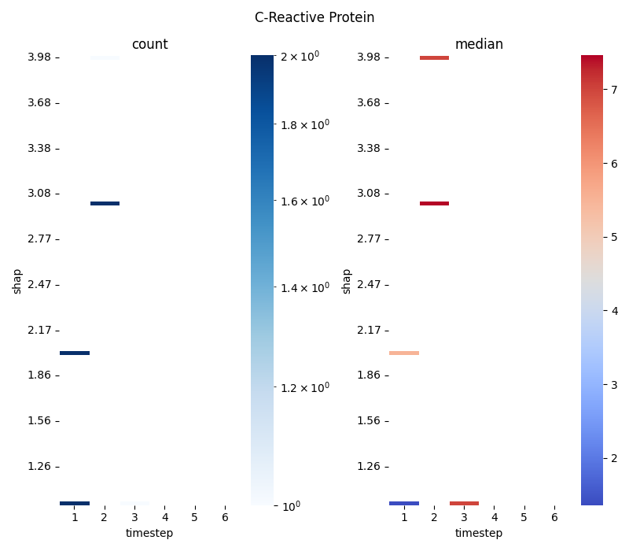

Note
Click here to download the full example code
Main 07 - 2dbin with manual data
Out:
[1 1 1 1 2 2 2 3]
[1 1 2 2 3 3 4 1]
[1 1 5 6 7 8 7 7]
Scipy:
[0.5 1.5 2.5 3.5 4.5 5.5 6.5]
[1. 1.03030303 1.06060606 1.09090909 1.12121212 1.15151515
1.18181818 1.21212121 1.24242424 1.27272727 1.3030303 1.33333333
1.36363636 1.39393939 1.42424242 1.45454545 1.48484848 1.51515152
1.54545455 1.57575758 1.60606061 1.63636364 1.66666667 1.6969697
1.72727273 1.75757576 1.78787879 1.81818182 1.84848485 1.87878788
1.90909091 1.93939394 1.96969697 2. 2.03030303 2.06060606
2.09090909 2.12121212 2.15151515 2.18181818 2.21212121 2.24242424
2.27272727 2.3030303 2.33333333 2.36363636 2.39393939 2.42424242
2.45454545 2.48484848 2.51515152 2.54545455 2.57575758 2.60606061
2.63636364 2.66666667 2.6969697 2.72727273 2.75757576 2.78787879
2.81818182 2.84848485 2.87878788 2.90909091 2.93939394 2.96969697
3. 3.03030303 3.06060606 3.09090909 3.12121212 3.15151515
3.18181818 3.21212121 3.24242424 3.27272727 3.3030303 3.33333333
3.36363636 3.39393939 3.42424242 3.45454545 3.48484848 3.51515152
3.54545455 3.57575758 3.60606061 3.63636364 3.66666667 3.6969697
3.72727273 3.75757576 3.78787879 3.81818182 3.84848485 3.87878788
3.90909091 3.93939394 3.96969697 4. ]
[[2. 0. 1. 0. 0. 0.]
[0. 0. 0. 0. 0. 0.]
[0. 0. 0. 0. 0. 0.]
[0. 0. 0. 0. 0. 0.]
[0. 0. 0. 0. 0. 0.]
[0. 0. 0. 0. 0. 0.]
[0. 0. 0. 0. 0. 0.]
[0. 0. 0. 0. 0. 0.]
[0. 0. 0. 0. 0. 0.]
[0. 0. 0. 0. 0. 0.]
[0. 0. 0. 0. 0. 0.]
[0. 0. 0. 0. 0. 0.]
[0. 0. 0. 0. 0. 0.]
[0. 0. 0. 0. 0. 0.]
[0. 0. 0. 0. 0. 0.]
[0. 0. 0. 0. 0. 0.]
[0. 0. 0. 0. 0. 0.]
[0. 0. 0. 0. 0. 0.]
[0. 0. 0. 0. 0. 0.]
[0. 0. 0. 0. 0. 0.]
[0. 0. 0. 0. 0. 0.]
[0. 0. 0. 0. 0. 0.]
[0. 0. 0. 0. 0. 0.]
[0. 0. 0. 0. 0. 0.]
[0. 0. 0. 0. 0. 0.]
[0. 0. 0. 0. 0. 0.]
[0. 0. 0. 0. 0. 0.]
[0. 0. 0. 0. 0. 0.]
[0. 0. 0. 0. 0. 0.]
[0. 0. 0. 0. 0. 0.]
[0. 0. 0. 0. 0. 0.]
[0. 0. 0. 0. 0. 0.]
[0. 0. 0. 0. 0. 0.]
[2. 0. 0. 0. 0. 0.]
[0. 0. 0. 0. 0. 0.]
[0. 0. 0. 0. 0. 0.]
[0. 0. 0. 0. 0. 0.]
[0. 0. 0. 0. 0. 0.]
[0. 0. 0. 0. 0. 0.]
[0. 0. 0. 0. 0. 0.]
[0. 0. 0. 0. 0. 0.]
[0. 0. 0. 0. 0. 0.]
[0. 0. 0. 0. 0. 0.]
[0. 0. 0. 0. 0. 0.]
[0. 0. 0. 0. 0. 0.]
[0. 0. 0. 0. 0. 0.]
[0. 0. 0. 0. 0. 0.]
[0. 0. 0. 0. 0. 0.]
[0. 0. 0. 0. 0. 0.]
[0. 0. 0. 0. 0. 0.]
[0. 0. 0. 0. 0. 0.]
[0. 0. 0. 0. 0. 0.]
[0. 0. 0. 0. 0. 0.]
[0. 0. 0. 0. 0. 0.]
[0. 0. 0. 0. 0. 0.]
[0. 0. 0. 0. 0. 0.]
[0. 0. 0. 0. 0. 0.]
[0. 0. 0. 0. 0. 0.]
[0. 0. 0. 0. 0. 0.]
[0. 0. 0. 0. 0. 0.]
[0. 0. 0. 0. 0. 0.]
[0. 0. 0. 0. 0. 0.]
[0. 0. 0. 0. 0. 0.]
[0. 0. 0. 0. 0. 0.]
[0. 0. 0. 0. 0. 0.]
[0. 0. 0. 0. 0. 0.]
[0. 2. 0. 0. 0. 0.]
[0. 0. 0. 0. 0. 0.]
[0. 0. 0. 0. 0. 0.]
[0. 0. 0. 0. 0. 0.]
[0. 0. 0. 0. 0. 0.]
[0. 0. 0. 0. 0. 0.]
[0. 0. 0. 0. 0. 0.]
[0. 0. 0. 0. 0. 0.]
[0. 0. 0. 0. 0. 0.]
[0. 0. 0. 0. 0. 0.]
[0. 0. 0. 0. 0. 0.]
[0. 0. 0. 0. 0. 0.]
[0. 0. 0. 0. 0. 0.]
[0. 0. 0. 0. 0. 0.]
[0. 0. 0. 0. 0. 0.]
[0. 0. 0. 0. 0. 0.]
[0. 0. 0. 0. 0. 0.]
[0. 0. 0. 0. 0. 0.]
[0. 0. 0. 0. 0. 0.]
[0. 0. 0. 0. 0. 0.]
[0. 0. 0. 0. 0. 0.]
[0. 0. 0. 0. 0. 0.]
[0. 0. 0. 0. 0. 0.]
[0. 0. 0. 0. 0. 0.]
[0. 0. 0. 0. 0. 0.]
[0. 0. 0. 0. 0. 0.]
[0. 0. 0. 0. 0. 0.]
[0. 0. 0. 0. 0. 0.]
[0. 0. 0. 0. 0. 0.]
[0. 0. 0. 0. 0. 0.]
[0. 0. 0. 0. 0. 0.]
[0. 0. 0. 0. 0. 0.]
[0. 1. 0. 0. 0. 0.]]
[1.01515152 1.04545455 1.07575758 1.10606061 1.13636364 1.16666667
1.1969697 1.22727273 1.25757576 1.28787879 1.31818182 1.34848485
1.37878788 1.40909091 1.43939394 1.46969697 1.5 1.53030303
1.56060606 1.59090909 1.62121212 1.65151515 1.68181818 1.71212121
1.74242424 1.77272727 1.8030303 1.83333333 1.86363636 1.89393939
1.92424242 1.95454545 1.98484848 2.01515152 2.04545455 2.07575758
2.10606061 2.13636364 2.16666667 2.1969697 2.22727273 2.25757576
2.28787879 2.31818182 2.34848485 2.37878788 2.40909091 2.43939394
2.46969697 2.5 2.53030303 2.56060606 2.59090909 2.62121212
2.65151515 2.68181818 2.71212121 2.74242424 2.77272727 2.8030303
2.83333333 2.86363636 2.89393939 2.92424242 2.95454545 2.98484848
3.01515152 3.04545455 3.07575758 3.10606061 3.13636364 3.16666667
3.1969697 3.22727273 3.25757576 3.28787879 3.31818182 3.34848485
3.37878788 3.40909091 3.43939394 3.46969697 3.5 3.53030303
3.56060606 3.59090909 3.62121212 3.65151515 3.68181818 3.71212121
3.74242424 3.77272727 3.8030303 3.83333333 3.86363636 3.89393939
3.92424242 3.95454545 3.98484848]
[1. 2. 3. 4. 5. 6.]
'\nimport sys\nsys.exit()\n# Compute bin statistic (count and median)\n\n# Plot\nplt.figure()\nsns.violinplot(data=data, x="timestep", y="shap_values", inner="box")\nplt.figure()\nplt.tight_layout()\nsns.violinplot(data=data, x="timestep", y="feature_values", inner="box")\nplt.figure()\nsns.histplot(data=data, x="timestep", shrink=.8)\n\n\n# Plot hist\nf1 = plt.hist2d(data.timestep, data.feature_values, bins=30, cmap=\'Reds\')\ncb = plt.colorbar()\ncb.set_label(\'counts in bin\')\nplt.title(\'Counts (square bin)\')\nplt.show()\n'
6 # Libraries
7 import seaborn as sns
8 import pandas as pd
9 import numpy as np
10 import matplotlib.pyplot as plt
11
12 from scipy import stats
13 from matplotlib.colors import LogNorm
14
15 def data_shap():
16 data = pd.read_csv('./data/shap.csv')
17 return data.timestep, \
18 data.shap_values, \
19 data.feature_values, \
20 data
21
22 def data_manual():
23 """"""
24 # Create random values
25 x = np.array([1, 1, 1, 1, 2, 2, 2, 3])
26 y = np.array([1, 1, 2, 2, 3, 3, 4, 1])
27 z = np.array([1, 1, 5, 6, 7, 8, 7, 7])
28 return x, y, z, None
29
30 # Create data
31 x, y, z, data = data_manual()
32
33 print(x)
34 print(y)
35 print(z)
36
37 """
38 # With pandas
39 v = z
40 vals, bins = np.histogram(v)
41 a = pd.Series(v).groupby(pd.cut(v, bins)).median()
42 print("\nPandas:")
43 print(bins)
44 print(vals)
45 print(a)
46 """
47
48
49
50
51
52
53
54 vmin = z.min()
55 vmax = z.max()
56
57
58
59 # Compute binned statistic (median)
60 binx = np.linspace(0, 3, 4) + 0.5
61 biny = np.linspace(0, 4, 5) + 0.5
62 binx = np.linspace(0, 6, 7) + 0.5
63 biny = np.linspace(y.min(), y.max(), 100)
64 r1 = stats.binned_statistic_2d(x=y, y=x, values=z,
65 statistic='count', bins=[biny, binx],
66 expand_binnumbers=False)
67
68 r2 = stats.binned_statistic_2d(x=y, y=x, values=z,
69 statistic='median', bins=[biny, binx],
70 expand_binnumbers=False)
71
72 # Compute centres
73 x_center = (r1.x_edge[:-1] + r1.x_edge[1:]) / 2
74 y_center = (r1.y_edge[:-1] + r1.y_edge[1:]) / 2
75
76 # Show
77 print("\nScipy:")
78 print(binx)
79 print(biny)
80 print(r1.statistic)
81 print(x_center)
82 print(y_center)
83
84 # Convert the computed matrix to an stacked dataframe?
85
86 flip1 = np.flip(r1.statistic, 0)
87 flip2 = np.flip(r2.statistic, 0)
88 #flip1 = r1.statistic
89 #flip2 = r2.statistic
90
91
92
93 # Display
94 fig, axs = plt.subplots(nrows=1, ncols=2,
95 sharey=False, sharex=False, figsize=(8, 7))
96
97 sns.heatmap(flip1, annot=False, linewidth=0.5,
98 xticklabels=y_center.astype(int),
99 yticklabels=x_center.round(2)[::-1], # Because of flip
100 cmap='Blues', ax=axs[0],
101 norm=LogNorm())
102
103 sns.heatmap(flip2, annot=False, linewidth=0.5,
104 xticklabels=y_center.astype(int),
105 yticklabels=x_center.round(2)[::-1], # Because of flip
106 cmap='coolwarm', ax=axs[1], zorder=1,
107 vmin=None, vmax=None, center=None, robust=True)
108
109 # If robust=True and vmin or vmax are absent, the colormap range
110 # is computed with robust quantiles instead of the extreme values.
111 """
112 sns.violinplot(x=x, y=y,
113 saturation=0.5, fliersize=0.1, linewidth=0.5,
114 color='green', ax=axs[2], zorder=3,
115 width=0.5)
116 """
117
118
119 # Configure ax0
120 axs[0].set_title('count')
121 axs[0].set_xlabel('timestep')
122 axs[0].set_ylabel('shap')
123 axs[0].locator_params(axis='y', nbins=10)
124 #axs[0].set_aspect('equal', 'box'
125
126 # Configure ax1
127 axs[1].set_title('median')
128 axs[1].set_xlabel('timestep')
129 axs[1].set_ylabel('shap')
130 axs[1].locator_params(axis='y', nbins=10)
131 #axs[1].set_aspect('equal', 'box')
132 #axs[1].invert_yaxis()
133
134 # Generic
135 plt.suptitle('C-Reactive Protein')
136
137 """
138 # Set axes manually
139 #plt.set_xticks()
140 #plt.setp(axs[1].get_yticklabels()[::1], visible=False)
141 #plt.setp(axs[1].get_yticklabels()[::5], visible=True)
142 from matplotlib import ticker
143 axs[1].xaxis.set_major_locator(ticker.MultipleLocator(1.00))
144 axs[1].xaxis.set_minor_locator(ticker.MultipleLocator(0.25))
145 """
146
147 plt.tight_layout()
148 plt.show()
149
150
151 """
152 import sys
153 sys.exit()
154 # Compute bin statistic (count and median)
155
156 # Plot
157 plt.figure()
158 sns.violinplot(data=data, x="timestep", y="shap_values", inner="box")
159 plt.figure()
160 plt.tight_layout()
161 sns.violinplot(data=data, x="timestep", y="feature_values", inner="box")
162 plt.figure()
163 sns.histplot(data=data, x="timestep", shrink=.8)
164
165
166 # Plot hist
167 f1 = plt.hist2d(data.timestep, data.feature_values, bins=30, cmap='Reds')
168 cb = plt.colorbar()
169 cb.set_label('counts in bin')
170 plt.title('Counts (square bin)')
171 plt.show()
172 """
Total running time of the script: ( 0 minutes 1.011 seconds)